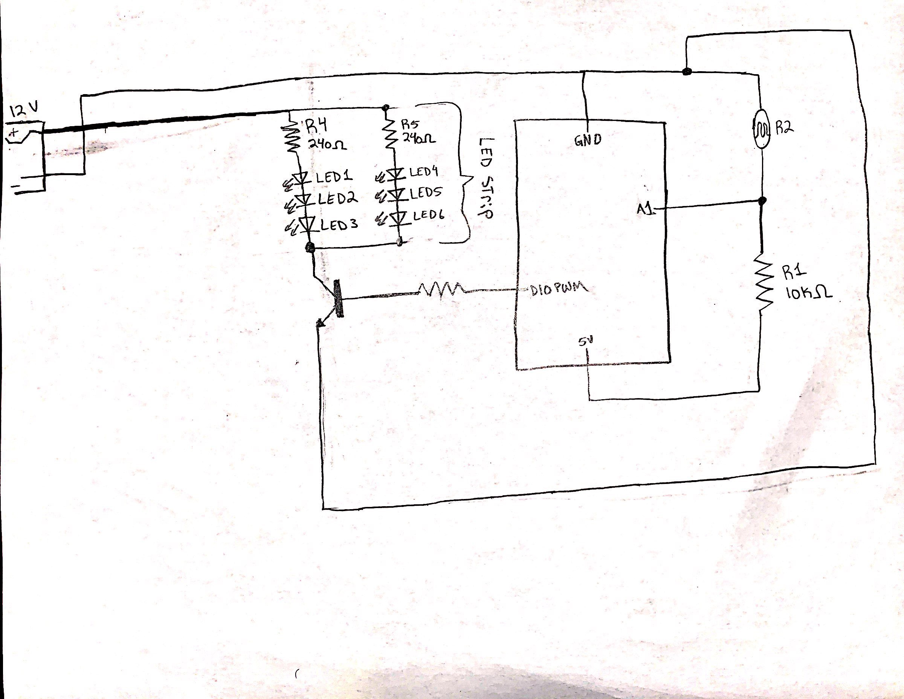
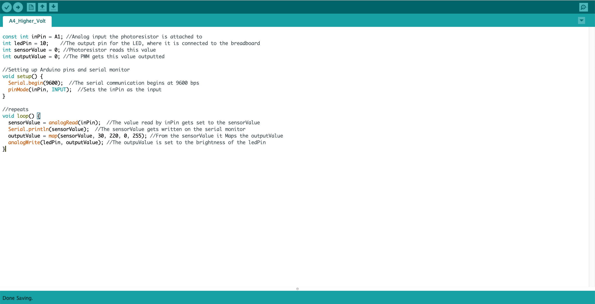

Natty's Assignment 4: High(er) voltage and transistors!
The prompt was to create a schematic, circuit, and code that uses a transistor to control load power separate from logic power. Checkout my work below!

The prompt was to create a schematic, circuit, and code that uses a transistor to control load power separate from logic power. Checkout my work below!


(300 LEDs) / (18 watts) = (57 LEDs) / (X watts)
X = 3.42 watts
Since I only used 57 LEDs out of the 300 LEDs, it only uses 3.42 watts.
12V - 3V - 3V - 3V = 3V
v = IR
3 = I (240(ohms))
I = 0.0125A
Each LED strip has 240 ohms, and the current runs through each strip at 0.0125A.
